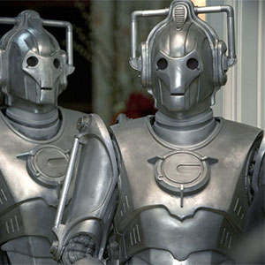

[Primary Navigation]

| Daleks |
| Cyberman |
| The Master |
| Lady Cassandra |
| Davros |
| Weeping Angels |
The Cyberman
Cybermen were a "race" of cybernetically augmented humanoids. They varied greatly in design, with different factions throughout time and space. The two major groups, from which all other known versions derived, were the Mondasian Cybermen, which originated on the planet Mondas – Earth's twin planet in the Doctor's universe – and the Cybermen created by Cybus Industries, which originated on Earth in an alternate universe.
Despite the different origins, there were similarities between both groups of Cybermen, and there were groups that shared the characteristics of both. For the most part, they lacked individuality or names. Cybermen had no emotions and viewed them as a weakness. They frequently attempted to physically and mentally re-engineer humans and other humanoids into Cybermen, via a process called "cyber-conversion" or "upgrading".
These Cybermen were originally a wholly organic species of humanoids who originated on Earth's former twin planet, Mondas. Mondas drifted into the outer solar system. To survive, the natives of that world adapted by turning themselves into cyborgs. Eventually, all of the Mondasians underwent cyber-conversion. Many of them left Mondas and ultimately developed into separate groups without connection to one another.